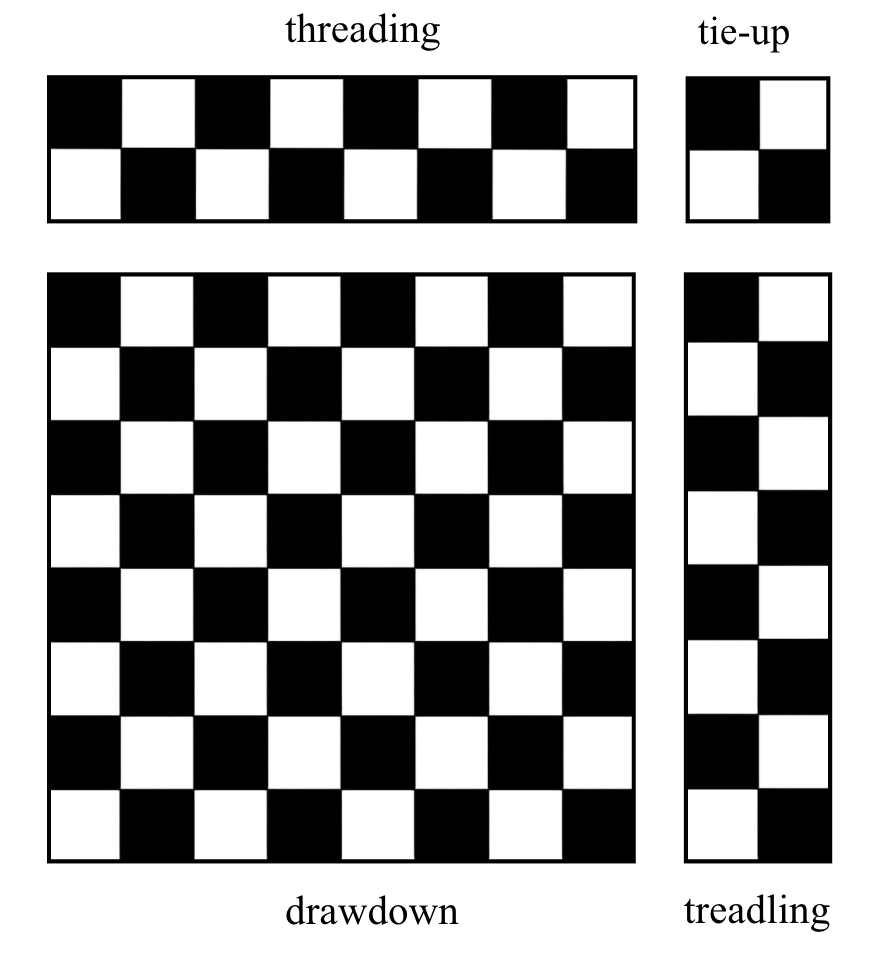
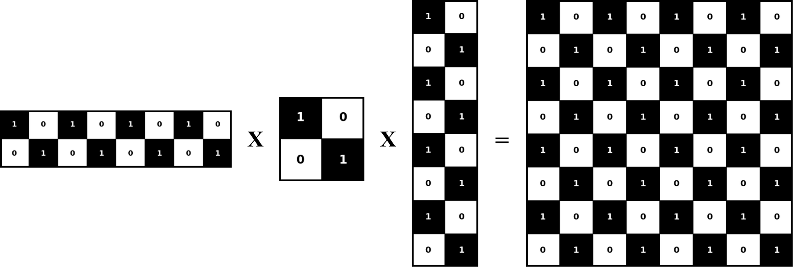

From Loom to the Classroom: Discovering Linear Algebra's Hidden Logic in Weaving
August 2026 · Palak Sharma
O*, a distinguished master weaver deftly moves the beater and the shuttle thread with his hands while his feet nimbly prance on the pedals of the loom. With each rhythmic repetition of the weft's movements across the warps, his head and eyes swiftly dart left to right and right back to left. The loom responds to his touch, and slowly, the threads accumulate, slithering into gaps and interlacing with one another like agile snakes, as the cloth begins to take form. Watching O* weave is almost hypnotic, like watching a graceful tap dancer, as if the beats and movements emerge from the same source.
Being a part of the Cognitive Neurology team from NIMHANS, I, along with my labmates, visited a South Indian weaving community on an assignment to understand how the visual pattern expertise of handloom weavers could be studied using psychological experimentation. We were also interested in whether occupational expertise in general could be harnessed to create ecologically valid cognitive assessments for Indian complex-skilled populations with limited exposure to reading and writing. Subjects from low-literate populations can sometimes be falsely diagnosed with cognitive impairments because of the over-reliance of neuropsychological assessment methods on reading and writing-based tasks. Yet these individuals may be highly engaged in creatively challenging occupational spheres, as is often the case with craftspeople.
After O* was done with the demonstration, S*, a friendly master weaver and textile designer, explained to us how the loom works, and enthusiastically encouraged our team to give it a try as well, on a simple two-pedal, two-frame loom. (Let's just say, if O*'s threads were like agile snakes, mine were rather clumsy and uncoordinated in comparison). Here is a small interactive simulation explaining the operations of a two-pedal, two-frame loom:
First, click “Pedal 1” in the simulation, and then “Pedal 2” and repeat for four times. Notice which frames and their corresponding warps are being lifted. Watch the alternating warps in dark green and the weft thread in light green travel in opposite directions with each pedal press. The weavers use their feet to operate the pedals and a handle called a beater to move the weft shuttle. After 8 weft cycles, the simulation stops. Congratulations — you have completed weaving your virtual cloth! (This is all quite quick and convenient, but remember, an actual handloom saree can have thousands of warps and wefts, and can take months to weave) You can click the blue “Reset” button to start over.
Struggling with executing the correct sequence of movements, I asked S*, “When the loom is more complicated, with multiple pedals and frames, how do you keep track of the sequence of movements?” “We use this weaving draft,” he said, and produced a paper with a colourful grid from his shirt pocket. He explained that the loom is configured according to the instructions in this draft, and the sequence of movements is defined accordingly to arrive at the final design of the cloth. Basically, it is an abstract notation system for weaving. In the following section, I shall explain how weaving drafts work through a toy example which corresponds to the above simulation with 2 pedals and frames each with eight warps and weft cycles:

1) Threading (2 frames × 8 warps) — In the threading matrix (uppermost, left), the two rows represent the two frames of the loom, while the eight columns represent each warp thread. Each warp thread can only be attached to one frame. The black point denotes which frame that particular thread is connected to.
2) Tie-up (2 frames × 2 pedals) — In the tie-up matrix (top-right), the two columns represent the pedals, while the two rows represent the shafts/frames. For example, the first pedal is attached to the first frame. When the first pedal is pressed, the first frame and the corresponding warp threads connected to it are raised.
3) Treadling (8 weft cycles × 2 pedals) — The treadling matrix is shown below the tie-up. The eight rows here refer to the eight weft sequences, while the two columns represent which pedal is pressed during each weft sequence.
4) Drawdown (8 warps × 8 weft cycles) — The final drawdown is the grid in the middle that represents the interlacement pattern of the resulting fabric.
You can try to replay the simulation again and refer to the weaving draft to see how pedal presses control frames, which determine which warps are lifted at each pedal press, and how each weft cycle passes through the warp to create the final interlacement pattern depicted in the drawdown.
I figured that perhaps we could use the weaving draft patterns as stimuli for designing visual psychophysics-based experiments. However, that would require multiple drafts and drawdown patterns, and I wondered where they could be sourced from. Of course, it would be unfeasible to ask weavers to manually design hundreds of drafts for this purpose, as it would be a very time-consuming process. We needed to find some logical summary of how the warps and wefts are controlled throughout the process of pedal pressing, frame lifting, and weft interlacement, so that we could computationally generate multiple, loom-reproducible interlacement patterns.
As I racked my rather mathematically-challenged brain, a talk on YouTube titled “It's Just Matrix Multiplication: Notation for Weaving” by Dr. Lea Albaugh at the Strange Loops conference came to the rescue. She very succinctly explained how the process of determining different configurations of the loom — involving threading, tie-up, and treadling — can be represented using binary matrices. Multiplying these matrices results in another binary matrix which, when converted into its graphical representation, produces the drawdown of the final weaving draft and, ultimately, the design of the cloth.
The equation for generating the weaving draft drawdown is:

For our team, this meant that I could simulate multiple loom-reproducible drawdowns using the above matrix multiplication equation, by randomly shuffling the threading, tie-up, and treadling matrices to create several drawdowns. Certain constraints regarding the physical structure of the loom had to be kept in mind, though. Mathematically, the matrix multiplication may be functional, but the resulting configuration may not always translate into a loom-reproducible design. For example, one such constraint was that a single warp thread cannot be attached to multiple frames. In the threading matrix, this would correspond to having two 1s in the same column. Although such a matrix would still execute the multiplication mathematically, attaching one warp thread to two frames on a real loom would cause the warp thread to break.